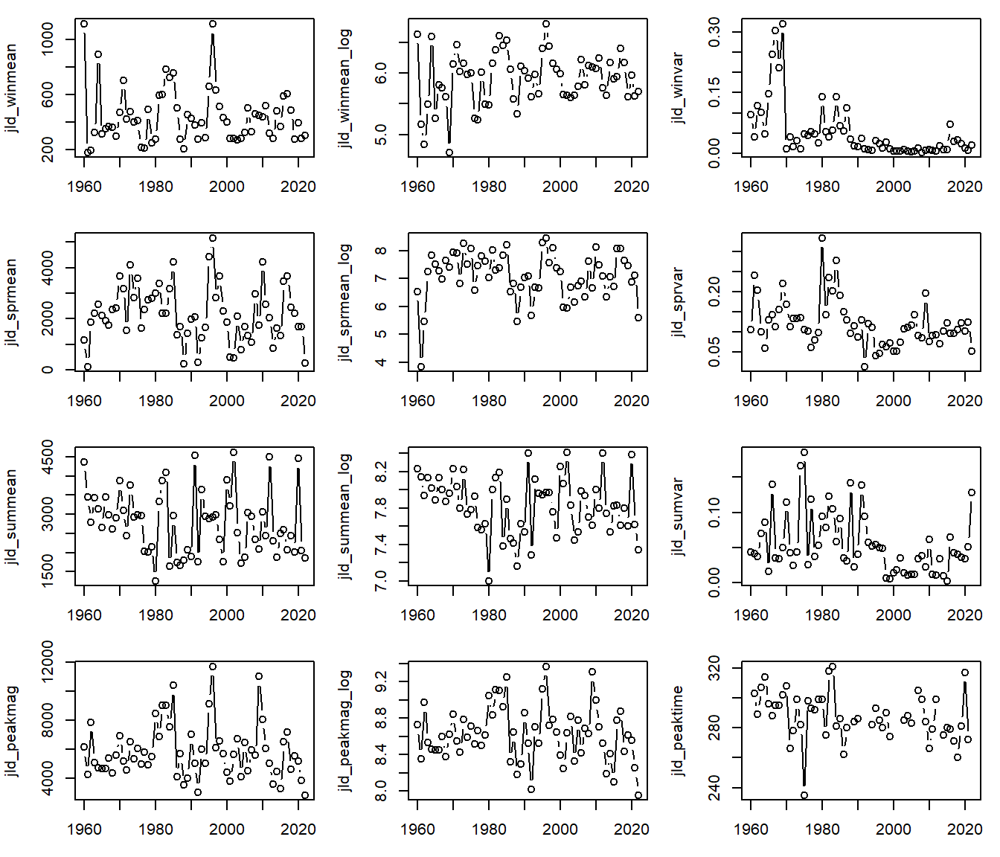
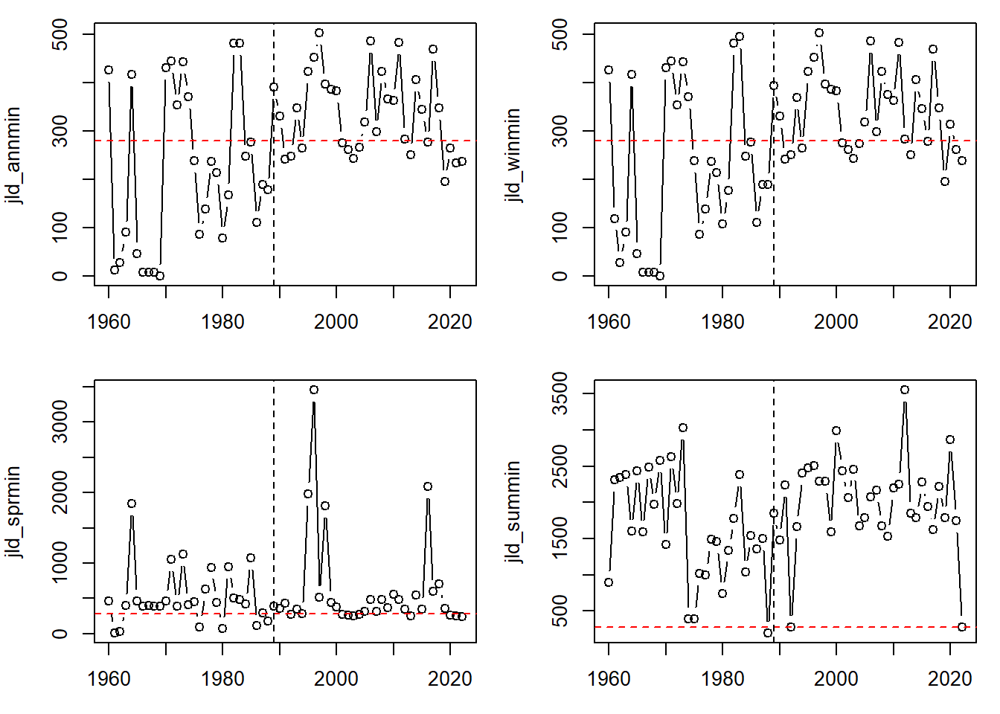
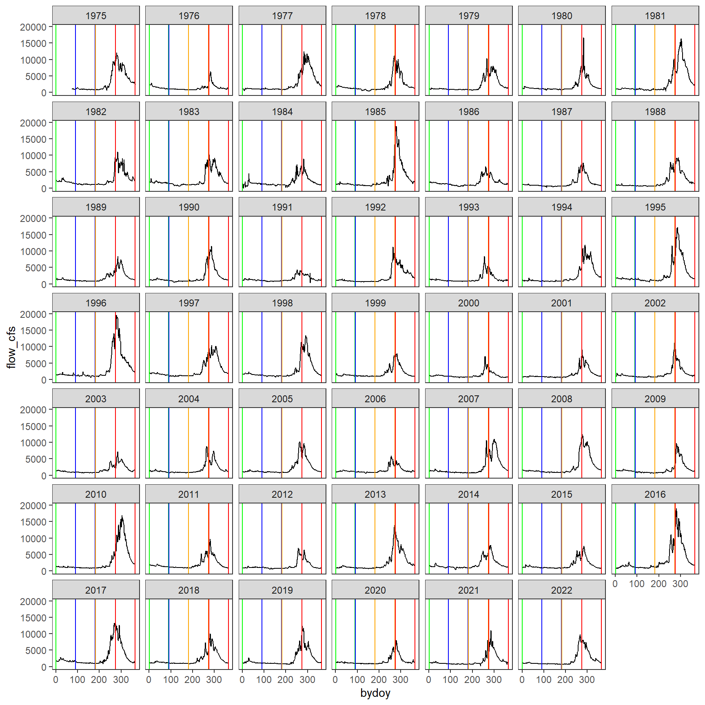
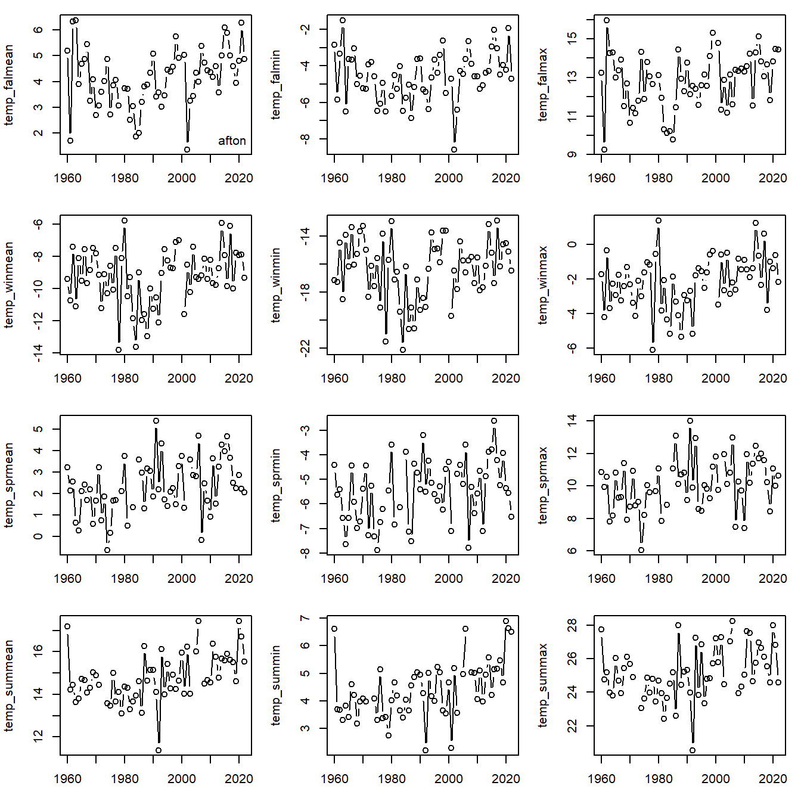
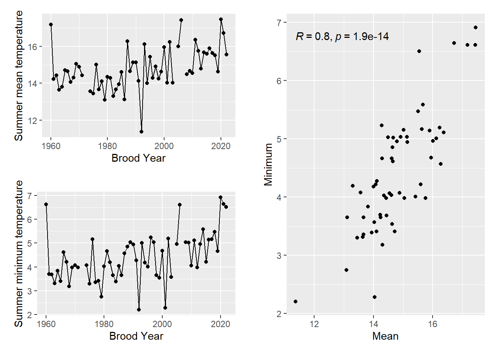
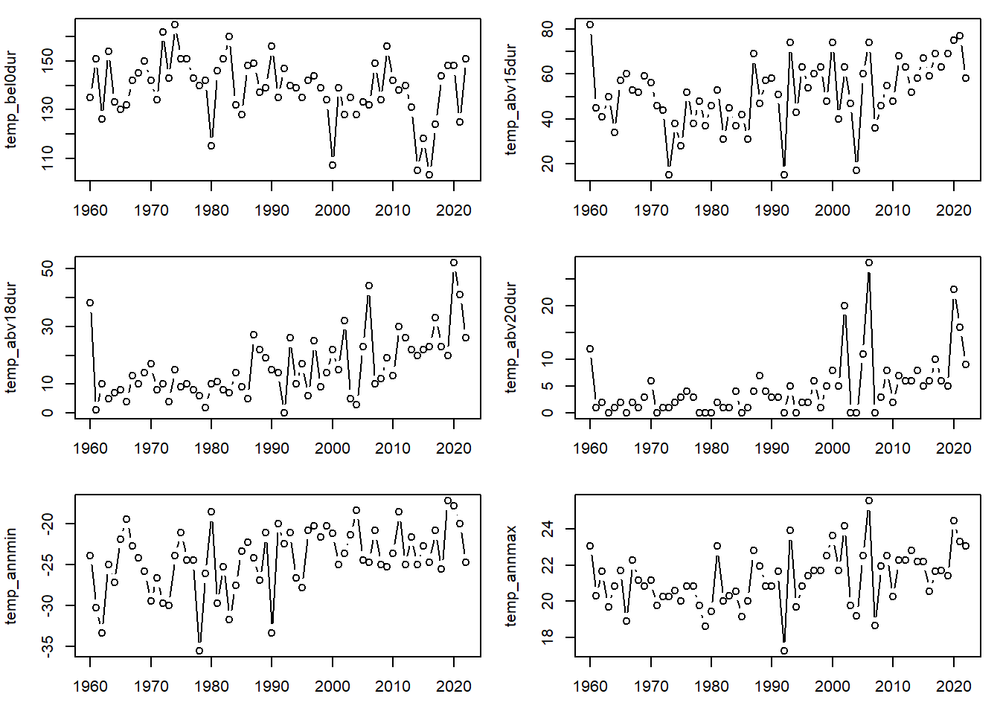

Pearson's product-moment correlation
data: flow2$SnakeNat and flow2$SnakeMoran
t = 95.373, df = 17458, p-value < 2.2e-16
alternative hypothesis: true correlation is not equal to 0
95 percent confidence interval:
0.5754375 0.5949431
sample estimates:
cor
0.585275
Calculate first-differenced daily flow after log transform, rate of daily change in flow per Ward et al. 2015, Global Change Biology (enables calculation of flow variability)
Plot JLD releases with winter and summer periods marked
Code
flow3 %>%#filter(broodyr >= 2014) %>% ggplot() +geom_line(aes(x = bydoy, y = SnakeMoran)) +geom_vline(xintercept =c(45,211), color ="blue") +# winter = Oct 15 - March 31geom_vline(xintercept =c(91,180), color ="dodgerblue") +# winter = Dec 1 - Feb 28/29geom_vline(xintercept =c(303,365), color ="red") +# summer = July 1 - August 31facet_wrap(~ broodyr) +theme_bw() +theme(panel.grid =element_blank())
par(mfrow =c(4,3), mar =c(3,4,1,1))plot(jld_winmean ~ broodyr, jldflow, type ="b")plot(jld_winmean_log ~ broodyr, jldflow, type ="b")plot(jld_winvar ~ broodyr, jldflow, type ="b")plot(jld_sprmean ~ broodyr, jldflow, type ="b")plot(jld_sprmean_log ~ broodyr, jldflow, type ="b")plot(jld_sprvar ~ broodyr, jldflow, type ="b")plot(jld_summean ~ broodyr, jldflow, type ="b")plot(jld_summean_log ~ broodyr, jldflow, type ="b")plot(jld_sumvar ~ broodyr, jldflow, type ="b")plot(jld_peakmag ~ broodyr, jldflow, type ="b")plot(jld_peakmag_log ~ broodyr, jldflow, type ="b")plot(jld_peaktime ~ broodyr, jldflow, type ="b")

Annual and seasonal minimum flow. Horiztonal red line denotes 280 cfs. Vertical grey line denotes 1989.
Code
par(mfrow =c(2,2), mar =c(3,4,1,1))plot(jld_annmin ~ broodyr, jldflow, type ="b")abline(h = (280), col ="red", lty =2)abline(v = (1989), col ="black", lty =2)plot(jld_winmin ~ broodyr, jldflow, type ="b")abline(h = (280), col ="red", lty =2)abline(v = (1989), col ="black", lty =2)plot(jld_sprmin ~ broodyr, jldflow, type ="b")abline(h = (280), col ="red", lty =2)abline(v = (1989), col ="black", lty =2)plot(jld_summin ~ broodyr, jldflow, type ="b")abline(h = (280), col ="red", lty =2)abline(v = (1989), col ="black", lty =2)

Log scale
Code
par(mfrow =c(2,2), mar =c(3,4,1,1))plot((jld_annmin_log) ~ broodyr, jldflow, type ="b")abline(h =log(280), col ="red", lty =2)plot((jld_winmin_log) ~ broodyr, jldflow, type ="b")abline(h =log(280), col ="red", lty =2)plot((jld_sprmin_log) ~ broodyr, jldflow, type ="b")abline(h =log(280), col ="red", lty =2)plot((jld_summin_log) ~ broodyr, jldflow, type ="b")abline(h =log(280), col ="red", lty =2)
View time series data by stream and year, with seasons marked
Code
flow6 %>%filter(site =="SnakeNat", broodyr >=1975) %>%ggplot() +geom_line(aes(x = bydoy, y = flow_cfs)) +geom_vline(xintercept =c(1,90), color ="green") +# fall = Sept 1 - Nov 30geom_vline(xintercept =c(91,181), color ="blue") +# winter = Dec 1 - Feb 29geom_vline(xintercept =c(182,274), color ="orange") +# spring = March 1 - May 31geom_vline(xintercept =c(275,365), color ="red") +# summer = June 1 - Aug 31facet_wrap(~ broodyr) +theme_bw() +theme(panel.grid =element_blank())

Calculate flow metrics for each sites
Code
# define season and cutoff for data completeness (70%)flow6 <- flow6 %>%mutate(season =ifelse(bydoy >=1& bydoy <=90, "fal",ifelse(bydoy >=91& bydoy <=181, "win",ifelse(bydoy >=182& bydoy <=274, "spr", "sum"))),cutoff =ifelse(season =="fal", 63, ifelse(season =="win", 63,ifelse(season =="spr", 63, 63))))flow6 <- flow6 %>%left_join(flow6 %>%group_by(site, broodyr, season) %>%summarise(n =sum(!is.na(flow_cfs))))# define seasons for loopsns <-unique(flow6$season)# seasonal mean flowflowlist <-list()for (i in1:length(sns)) { d <- flow6 %>%filter(season == sns[i]) d <- d[complete.cases(d),] flowlist[[i]] <- d %>%group_by(site, season, broodyr, cutoff, n) %>%summarize(flowmean =ifelse(unique(n) <=unique(cutoff), NA, mean(flow_cfs, na.rm =TRUE))) %>%ungroup() %>%select(site, season, broodyr, flowmean) }flowsum1 <-bind_rows(flowlist) %>%spread(season, flowmean) %>%rename(natq_falmean = fal, natq_winmean = win, natq_sprmean = spr, natq_summean = sum)# seasonal log flow flowlist <-list()for (i in1:length(sns)) { d <- flow6 %>%filter(season == sns[i]) d <- d[complete.cases(d),] flowlist[[i]] <- d %>%group_by(site, season, broodyr, cutoff, n) %>%summarize(flowmean_log =ifelse(unique(n) <=unique(cutoff), NA, mean(log(flow_cfs), na.rm =TRUE))) %>%ungroup() %>%select(site, season, broodyr, flowmean_log) }flowsum2 <-bind_rows(flowlist) %>%spread(season, flowmean_log) %>%rename(natq_falmean_log = fal, natq_winmean_log = win, natq_sprmean_log = spr, natq_summean_log = sum)# seasonal flow variationflowlist <-list()for (i in1:length(sns)) { d <- flow6 %>%filter(season == sns[i]) d <- d[complete.cases(d),] flowlist[[i]] <- d %>%group_by(site, season, broodyr, cutoff, n) %>%summarize(flowvar =ifelse(unique(n) <=unique(cutoff), NA, sd(flow_var, na.rm =TRUE))) %>%ungroup() %>%select(site, season, broodyr, flowvar) }flowsum3 <-bind_rows(flowlist) %>%spread(season, flowvar) %>%rename(natq_falvar = fal, natq_winvar = win, natq_sprvar = spr, natq_sumvar = sum)# annual flow metrics (no data availability cutoff)flowlist <-list()sites <-unique(flow6$site)for (i in1:length(sites)) { d <- flow6 %>%filter(site == sites[i]) d <- d[complete.cases(d),] flowlist[[i]] <- d %>%group_by(site, broodyr) %>%summarize(natq_peakmag =max(flow_cfs, na.rm =TRUE), # magnitude of peak spring flowsnatq_peakmag_log =max(log(flow_cfs), na.rm =TRUE), # loggednatq_annmin =min(flow_cfs, na.rm =TRUE), # annual minimum flownatq_annmin_log =min(log(flow_cfs), na.rm =TRUE), # loggednatq_peaktime = bydoy[which.max(flow_cfs)], # brood year day of peak spring flowsnatq_flooddur =sum(flow_cfs >=quantile(d$flow_cfs[!is.na(d$flow_cfs)], probs =0.75), na.rm = T), # number of days flow is greater than the long-term 75th percentile of flownatq_floodvar =sd(flow_var[flow_cfs >=quantile(d$flow_cfs[!is.na(d$flow_cfs)], probs =0.75)], na.rm =TRUE), # spring/summer flood variability (var in flood pulse)natq_floodmag =sum(flow_cfs[flow_cfs >=quantile(d$flow_cfs[!is.na(d$flow_cfs)], probs =0.75)], na.rm = T) # magnitude of spring flood (flow > long-term 75th percentile) ) %>%ungroup()}flowsum4 <-bind_rows(flowlist) # joinflowsum <- flowsum1 %>%left_join(flowsum2) %>%left_join(flowsum3) %>%left_join(flowsum4)
Plot time series data (natural Snake River only)
Code
d <- flowsum %>%filter(site =="SnakeNat")par(mfrow =c(7,3), mar =c(3,4,1,1))plot(natq_falmean ~ broodyr, d, type ="b")plot(natq_falmean_log ~ broodyr, d, type ="b")plot(natq_falvar ~ broodyr, d, type ="b")plot(natq_winmean ~ broodyr, d, type ="b")plot(natq_winmean_log ~ broodyr, d, type ="b")plot(natq_winvar ~ broodyr, d, type ="b")plot(natq_sprmean ~ broodyr, d, type ="b")plot(natq_sprmean_log ~ broodyr, d, type ="b")plot(natq_sprvar ~ broodyr, d, type ="b")plot(natq_summean ~ broodyr, d, type ="b")plot(natq_summean_log ~ broodyr, d, type ="b")plot(natq_sumvar ~ broodyr, d, type ="b")plot(natq_peakmag ~ broodyr, d, type ="b")plot(natq_peakmag_log ~ broodyr, d, type ="b")plot(natq_peaktime ~ broodyr, d, type ="b")plot(natq_flooddur ~ broodyr, d, type ="b")plot(natq_floodvar ~ broodyr, d, type ="b")plot(natq_floodmag ~ broodyr, d, type ="b")plot(natq_annmin ~ broodyr, d, type ="b")plot(natq_annmin_log ~ broodyr, d, type ="b")
airtemp2 %>%filter(site =="moose") %>%ggplot() +geom_line(aes(x = bydoy, y = tmean)) +geom_vline(xintercept =c(1,90), color ="green") +# fall = Sept 1 - Nov 30geom_vline(xintercept =c(91,181), color ="blue") +# winter = Dec 1 - Feb 29geom_vline(xintercept =c(182,274), color ="orange") +# spring = March 1 - May 31geom_vline(xintercept =c(275,365), color ="red") +# summer = June 1 - Aug 31facet_wrap(~ broodyr) +# summer = June 1 - Aug 31facet_wrap(~ broodyr) +theme_bw() +theme(panel.grid =element_blank())
d <- airsum %>%filter(site =="moose")par(mfrow =c(4,3), mar =c(3,4,1,1))plot(temp_falmean ~ broodyr, d, type ="b")legend("bottomright", legend = sites[i], bty ="n")plot(temp_falmin ~ broodyr, d, type ="b")plot(temp_falmax ~ broodyr, d, type ="b")plot(temp_winmean ~ broodyr, d, type ="b")plot(temp_winmin ~ broodyr, d, type ="b")plot(temp_winmax ~ broodyr, d, type ="b")plot(temp_sprmean ~ broodyr, d, type ="b")plot(temp_sprmin ~ broodyr, d, type ="b")plot(temp_sprmax ~ broodyr, d, type ="b")plot(temp_summean ~ broodyr, d, type ="b")plot(temp_summin ~ broodyr, d, type ="b")plot(temp_summax ~ broodyr, d, type ="b")

Compare summer mean and min temps per Bryan Shuman comment
Code
# jpeg("Redd Counts Ricker/SummerTempCovs.jpg", units = "in", height = 6, width = 8, res = 500)p1 <- airsum %>%filter(site =="moose") %>%ggplot(aes(x = broodyr, y = temp_summean)) +geom_point() +geom_line() +xlab("Brood Year") +ylab("Summer mean temperature") +theme(plot.margin =margin(0.5,0.5,0.5,0.5, unit ="cm"))p2 <- airsum %>%filter(site =="moose") %>%ggplot(aes(x = broodyr, y = temp_summin)) +geom_point() +geom_line() +xlab("Brood Year") +ylab("Summer minimum temperature") +theme(plot.margin =margin(0.5,0.5,0.5,0.5, unit ="cm"))p3 <- airsum %>%filter(site =="moose") %>%ggplot(aes(x = temp_summean, y = temp_summin)) +geom_point() +xlab("Mean") +ylab("Minimum") +stat_cor(method ="pearson") +theme(plot.margin =margin(0.5,0.5,0.5,0.5, unit ="cm"))ggarrange(ggarrange(p1, p2, nrow =2), p3, ncol =2)

Code
# dev.off()
Plot time series of temperature thresholds:
Code
d <- airsum %>%filter(site =="moose")par(mfrow =c(3,2), mar =c(3,4,1,1))plot(temp_bel0dur ~ broodyr, d, type ="b")plot(temp_abv15dur ~ broodyr, d, type ="b")plot(temp_abv18dur ~ broodyr, d, type ="b")plot(temp_abv20dur ~ broodyr, d, type ="b")plot(temp_annmin ~ broodyr, d, type ="b")plot(temp_annmax ~ broodyr, d, type ="b")

Pairs plots of seasonal mean air temperature variables: